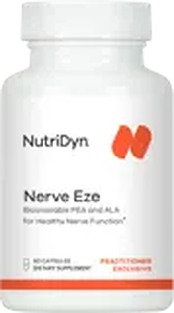

Nerve Pain and Neuropathy
Burning, tingling or numb feet and hands
Peripheral neuropathy means damage to the nerves outside the brain and spinal cord. The longest ones, which reach your toes, are hit first, so it often starts as burning, tingling or numb feet. More than 20 million Americans are thought to have it. High blood sugar is the top cause, and many other causes can be found and treated.
What you may feel
- Burning or sharp, electric jolts
- Tingling, pins and needles
- Numb, as if wearing socks or gloves
- Often worse at night
- Poor balance, stumbles and falls
- Cuts or blisters you do not feel
- Weak muscles or cramps
- Sometimes you feel nothing at first
Common causes
- High blood sugar: diabetes or prediabetestop cause
- Low vitamin B12, as with metformin or acid blockers
- Heavy alcohol use
- Chemotherapy, other medicines or too much B6
- Low thyroid (hypothyroidism)
- Kidney disease
- Infections or autoimmune disease
- Family genes
Blood sugar A1c: 3-month average
Normal A1c? A 2-hour glucose test (sweet drink, then blood test) can catch early trouble.
Vitamin B12
Test before you take B12. Low or borderline? An MMA (methylmalonic acid) test shows if it is really low. On metformin? Ask how often to recheck it.
Thyroid TSH
An underactive thyroid can cause tingling too. TSH is the main thyroid blood test.
Foot touch test
A thin nylon thread touched to your feet (10-gram monofilament). It does not hurt. Have diabetes? Every year.
Your doctor may also check folate, a blood count, kidney and liver tests and a blood protein test. ADA and American Academy of Neurology guidance
Sudden numbness or weakness on one side, a drooping face or slurred speech: call 911. Get care right away for numbness or weakness that comes on fast or spreads over days, a foot sore that will not heal, or a red, hot, swollen foot. See your doctor soon if numbness on one side only came on slowly.
Lifestyle RecommendationsProtect your nerves and your feet
Protein and veggies first, fewer sweets.
Walk, bike or swim. Practice balance.
Daily: look for cuts, blisters, red spots.
No bare feet. Test bath water with your elbow.
Alcohol is toxic to nerves. Keep it low.
Linked to nerve damage and slow healing.

- Supports healthy nerve function
- PEA is a fat-based messenger your body makes too
Per capsule: 300 mg PEA (palmitoylethanolamide, as Levagen+), 150 mg alpha lipoic acid (ALA)2 capsules a day = 600 mg PEA + 300 mg ALA. Vegetarian capsule.

- Supports healthy blood sugar already in the normal range
- With Nerve Eze: 600 mg of ALA a day
Per 5 capsules: 100 mg dihydroberberine, 300 mg ALA, 600 mcg chromium, 2,000 mcg biotin, 500 mg Ceylon cinnamon, plus fenugreek, stinging nettle, bitter melon, gymnema, green tea and banaba

- Supports healthy myelin, the nerve’s coat
- Methylcobalamin, a ready-to-use form of B12
Per tablet: 5,000 mcg (5 mg) vitamin B12 as methylcobalamin, quick-dissolveCherry flavor, sweetened with xylitol and stevia. Vegetarian.

- Active forms, ready for your body to use
- Supports healthy methylation
Per 2 capsules: 1 mg B12 (methyl + adenosyl), 10 mg B6 (as P5P), 30 mg B2 (as R5P), 800 mcg DFE folate (L-5-MTHF), 500 mcg biotin, 5 mg zinc, 700 mg TMG, 500 mg NAC, 25 mg intrinsic factor (from pork)

- Building blocks of nerve cell membranes
- Supports a healthy inflammatory response
Per softgel: 1,000 mg EPA + DHA from fish oil (730 mg EPA, 270 mg DHA)Contains fish (anchovy, sardine, mackerel). Gelatin softgel.
Your daily rhythm
- Nerve Eze 1 capsule
- Gluco IR 3 capsules
- B12 Pro 1 tablet, if advised
- Methyl Complete 2 capsules
- Gluco IR 2 capsules
- Omega Pure EPA-DHA 1000 1 softgel
- Nerve Eze 1 capsule
Pharmacist checkKeep taking your medicines.
- Test B12 first (MMA if borderline): B12 Pro and Methyl Complete make it read high. Years on metformin or acid blockers? Ask how often to recheck.
- On diabetes medicine? Gluco IR (dihydroberberine, chromium, ALA) and the ALA in Nerve Eze may add to it. Check your sugar more often and tell your prescriber.
- Blood test coming? Biotin (Gluco IR 2,000 mcg, Methyl Complete 500 mcg) can throw off heart, thyroid and other tests. Tell the lab; ask what to pause.
- B6 adds up. Methyl Complete has 10 mg; too much B6 can itself cause tingling. Show your pharmacist every bottle.
- Pregnant or nursing, in cancer care, or on blood thinners or transplant medicines? Ask your pharmacist (and your cancer doctor) before any of these.